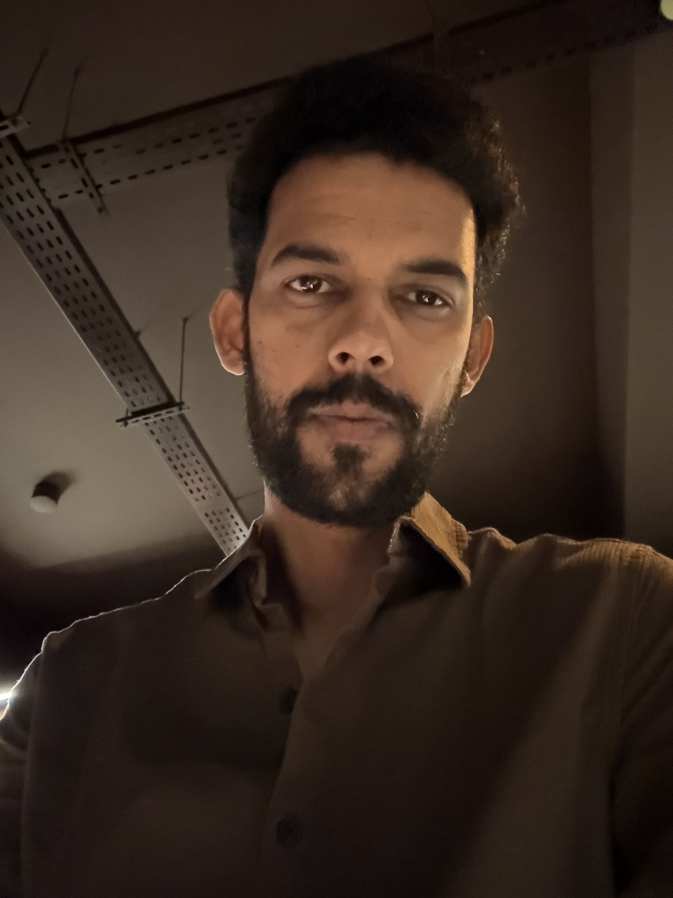
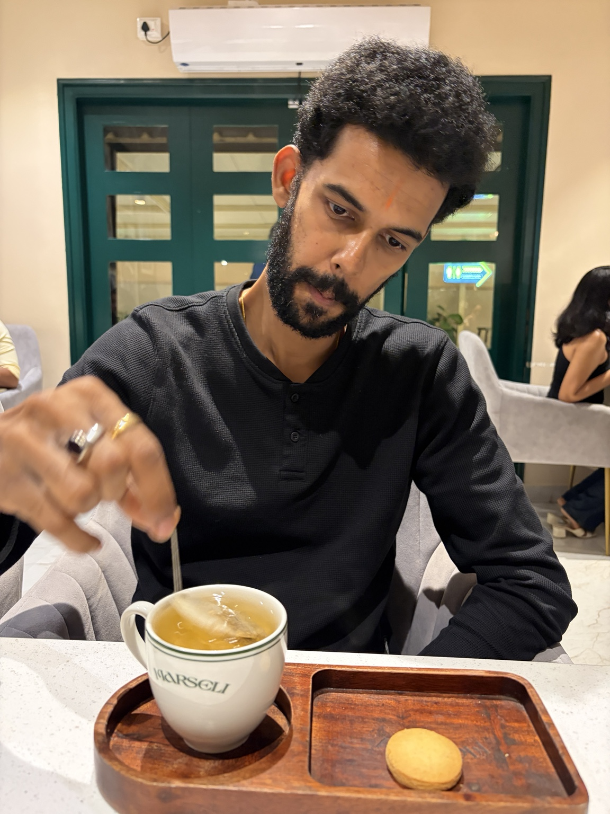
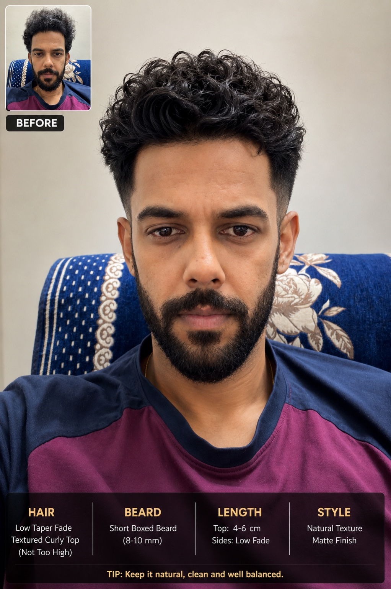
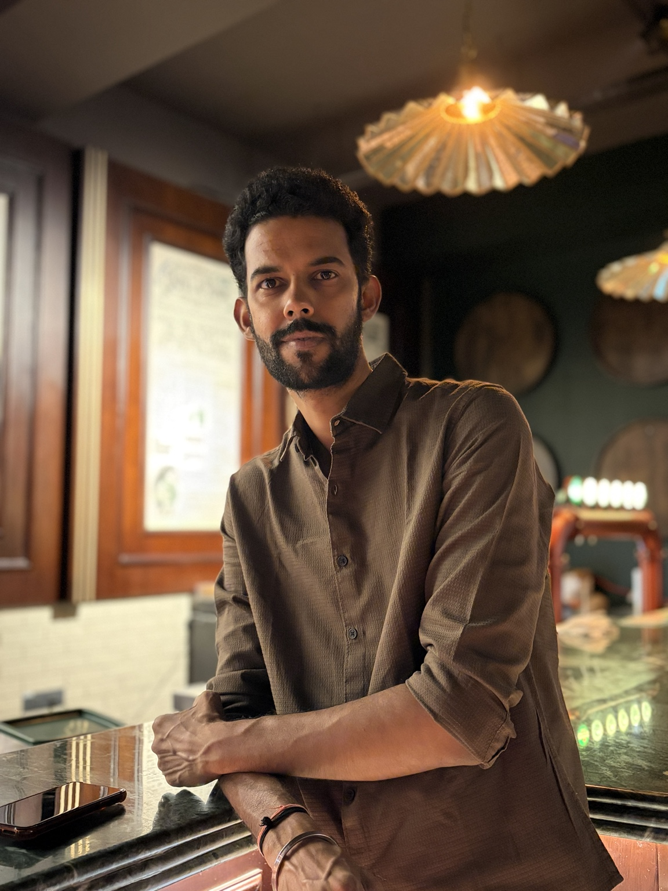
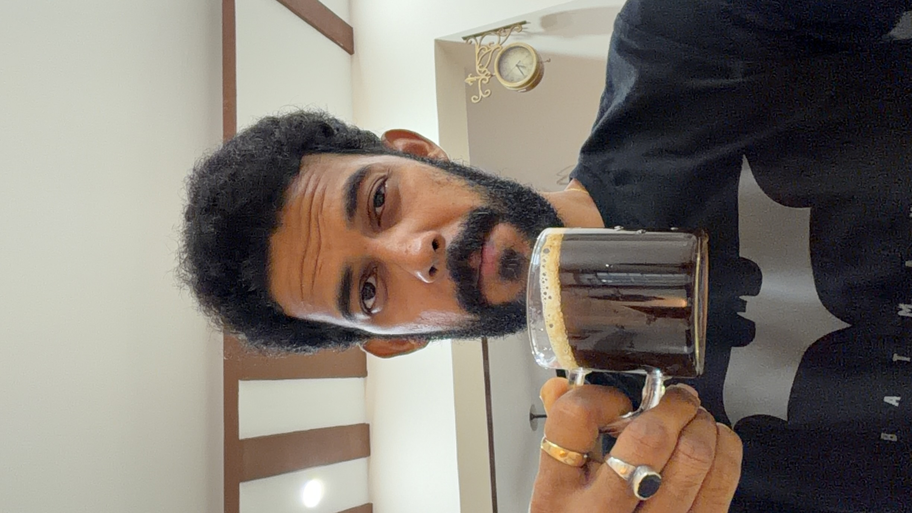
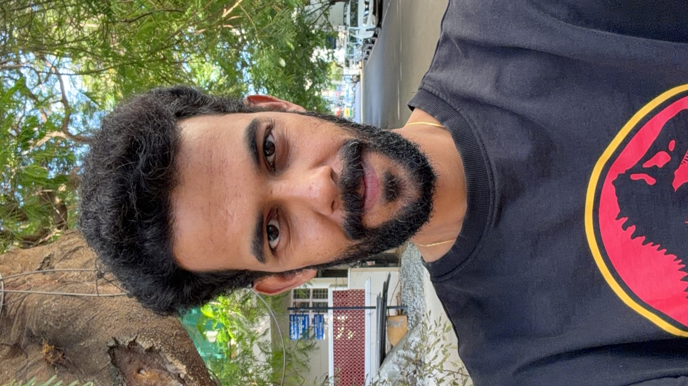

I started with pixels.
I stayed for the problems.
And YES, I still ask WHY?
12+ years of moving from making things look good to understanding why they should exist in the first place.
Product Designer · Kotak · UX · Problem solving · Human behaviour

12+ YEARS ✦Professional WHY-askerI didn't exactly fall in love with books.
I was more comfortable with a computer than a textbook. So when it was time to choose a direction, design and animation sounded perfect.
More pixels. Fewer pages.

VISUAL DESIGN ERAFor the first few years, I made things look good.
Colour. Typography. Layout. Composition. Images. Polish.
Then one question wouldn't leave me alone.
I realised I wasn't interested in just designing screens.
I was interested in the problem behind the screen — what people were trying to do, what they expected, where they got stuck, and how we could make the experience make sense.
Less “How does it look?”
More “Why does it work?”

USER FIRST 👀My questions got better.
Who is using this?
What are they thinking and expecting?
What are we actually trying to solve?
Can we remove friction instead of adding features?
From visual craft to product thinking.
Learning the craft of visual communication.
Understanding composition, hierarchy and storytelling.
Understanding users, behaviour, context and friction.
Bringing people, business, technology and design together.
Now I work where four worlds meet.
👥 People
Needs, behaviour, context, expectations.💼 Business
Outcomes, value, constraints, priorities.⚙️ Technology
What is possible, scalable and practical.🎨 Design
Clarity, usability, interaction and craft.
PRODUCT DESIGN
Coffee helps the WHYs. ☕Complexity is easy.
Simplicity takes work.
The real satisfaction comes when a complicated problem becomes simple, a confusing experience starts making sense, or a user completes a task without stopping to ask, “What am I supposed to do now?”
I started with pixels.
I stayed for the problems.
I didn't leave visual design behind. I simply added another layer to it: understanding people, behaviour and the problems worth solving.
And after 12+ years, I'm still asking WHY?
